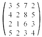

Matematicko programiranje
07.02.'96.
1. Dat je problem P(t):
(min) 3x + 2ty + 5z
p.o. x + 2y + 3z ³ 5, 2x + 2y + z ³
3t, x,y,z ³ 0.
2. Resiti problem linearnog programiranja:
(min) 3x1 + x2 + x3
+ 5x4 + 3x5 + 2x6
+ 5x7 + 3x8 + x9
p.o. x1 + x2 + x3
= 1, x4 + x5 + x6
= 1, x7 + x8 + x9
= 1, x1 + x4 + x7
= 1, x2 + x5 + x8
= 1,
x3 + x6 + x9
= 1, x1,x2,x3,x4,x5,x6,x7,x8,x9
³ 0.
3. Resiti i obrazloziti resenje problema:
(min) x² + y² + sin(x + y) uz ogranicenja: x + y ³
3p/2, y ³ p,
y ³ x.
4. (N-smer) Metodom gradijenta naci minimum
funkcije: ƒ = - 6x - 4y + x² + y² + 18 pri ogranicenjima:
4x + 3y £ 24, x² - 5x + y² £
6, 0 £ x,y.
4. (V-smer) Odrediti strategije oba igraca sledece matricne igre: 